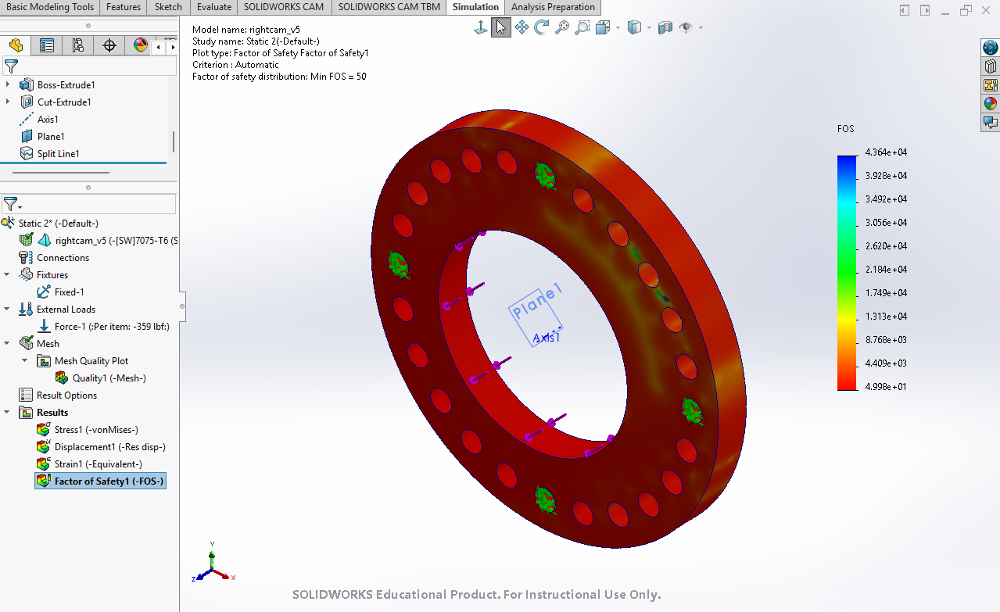
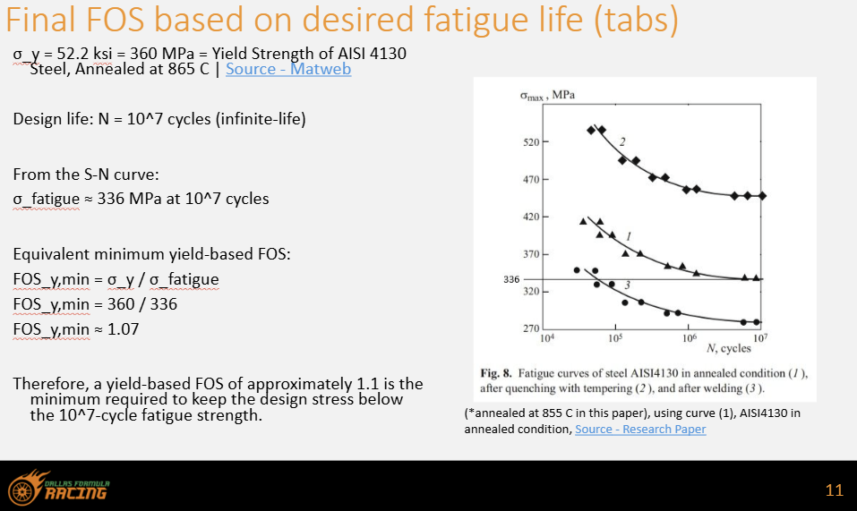

Refine the tabs to the fatigue-life target
For the test-mule mounting tabs, the load cases are defined and a target factor of safety of 1.1 is established for a 107-cycle design life. The current work is to iterate the geometry before machining.
My work spans two separate efforts: the mounting tabs and systems testing for a near-term test mule, and the 2028 competition-car differential mount. The team is not entering a 2027 competition; the interactive differential mount shown here is being developed for the following competition car.
Loading 2028 assembly…
For the test-mule mounting tabs, the load cases are defined and a target factor of safety of 1.1 is established for a 107-cycle design life. The current work is to iterate the geometry before machining.
Chassis tubes, chain and sprocket clearance, halfshaft position, CV-joint movement, bearing locations, bolt access, assembly sequence, manufacturability, and durability over multiple seasons.
I first traced how the differential, sprockets, chain, bearings, halfshafts, eccentric cams, and chassis connect. This established the mount interfaces and load paths before I changed the geometry.

I carried the 2028 competition-car eccentric differential mount from an initial concept through packaging and joint-design revisions:
I used the chain force, differential reactions, bearing loads, and cam geometry to calculate the loads transferred into the chassis. Those reactions became the boundary conditions for the left and right mount analyses.

I applied the calculated reactions to the mount model and reviewed stress, displacement, and factor of safety. The first result left excess margin, so the next revision will reduce thickness or remove low-stress material before the analysis is repeated.
During a dyno session, I watched the drivetrain run under load and compared the existing turnbuckle tensioner with an eccentric-mount approach. I also reviewed how the volumetric-efficiency map is used during engine tuning and power measurement.


I modeled separate left and right tabs because the calculated reactions differ by side. The FEA uses those side-specific loads, a fixed welded edge, and load applied at each bolt hole. I then used material-specific S-N data to connect the analysis factor of safety to the desired fatigue life. The tab dimensions use available nominal stock sizes to avoid custom material cutting and reduce cost.

We selected 107 cycles as the design-life target for the AISI 4130 tabs. At that life, the annealed-steel S-N curve gives a fatigue strength of approximately 336 MPa. Comparing it with the 360 MPa yield strength gives an equivalent minimum yield-based factor of safety of 360 / 336 ≈ 1.07, so I set 1.1 as the practical FEA target.

The test mule is a separate, non-competition project from the 2028 competition mount. Its purpose is to establish a working baseline car over the next few months and provide a platform for testing systems and setup changes. I printed its mounts to check chassis fit, tool access, assembly order, and nearby clearances.
With the fatigue-based factor-of-safety target established for the test-mule tabs, I am training on the Tormach CNC mill while their geometry is refined. Machining will begin after the final FEA iteration and design release.